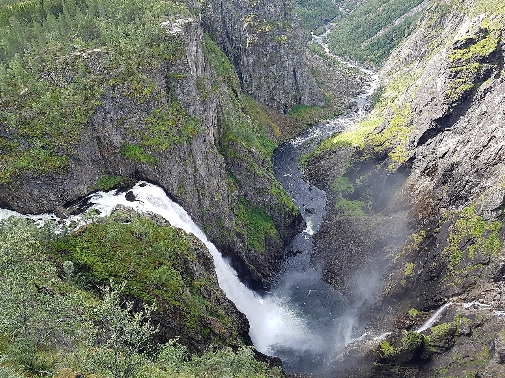

YOUR NORWEGIAN FIELD GUIDE
Norway
is calling.
Fjords, coastlines and places worth stopping for.
Discover what is around you and build your own way through Norway.
DESIGNED AROUND NORWAY
FOUR WAYS INTO NORWAY
Your Norway. Your way.
Choose places, photographs, cafe stops or stories.
MANY LANDSCAPES. ONE EXTRAORDINARY COUNTRY.
ONE DESTINATION. SO MUCH ALONG THE WAY.
Take the scenic way.
Make the journey part of the adventure. Start with a suggested route, or find stops along your own road.
Driving plans end at access points. Leave time for visits, hikes and ferry crossings; mountain roads are seasonal.
PLACES TO DISCOVER / NORWAY
Go somewhere
that stays with you.
Find viewpoints, waterfalls, towns and trails.
Explore photos, practical details and routes at your own pace.
Choose a place, then plan your own visit.

THE SOUND OF SOMETHING WILD
Let the landscape
do the talking.
Stand before the waterfalls of Hardanger. Follow the water into the fjords. Slow down, look up, and make room for a different kind of journey.